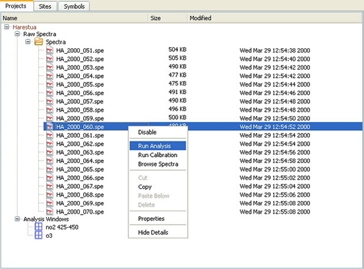

QDOAS Projects Tree

The organisation of projects, analysis windows, spectra files and directories in a tree structure completed with the definition of right-click shortcut menus at each level of the tree makes the access, manipulation and configuration of all these objects very easy.
Raw Spectra
Spectra to analyze have to be inserted under this project tree node. Individual files and complete directories structures are accepted. The “New Folder” option allows organizing spectra files and directories within a user-defined catalog (folder that is not physically present on the disk). The following actions can be performed from any node :
| Browse Spectra | Browses spectra in the selected file; |
| Run Analysis | analyses spectra using the configuration of the project and analysis windows; this step includes the correction of the wavelength calibration of the reference spectrum if it has been requested in the configuration of the analysis windows; |
| Run Spectra | uses the options defined in the Calibration page of Projects Properties to apply it on spectra. |
To move from one record to the other or from one file to the other (in case of multiple files selection), use the adequate buttons in the toolbar :
Other options :
| Disable/Enable | Disables the selected file or directory from the list of files to browse/analyze. Enable option re-enables previously disabled files. |
| Refresh | Refreshes the list of files in the selected directory; |
| Show/Hide details | Shows/hides file information (last modification date and time, size). The file size information is useful to indicate if the selected file is empty or not. |
Analysis windows
A project can include several spectral analysis windows. A specific analysis window can be disabled in order not to process it without removing it from the list. The View Cross Sections option is useful to check that the requested cross-sections files exist.